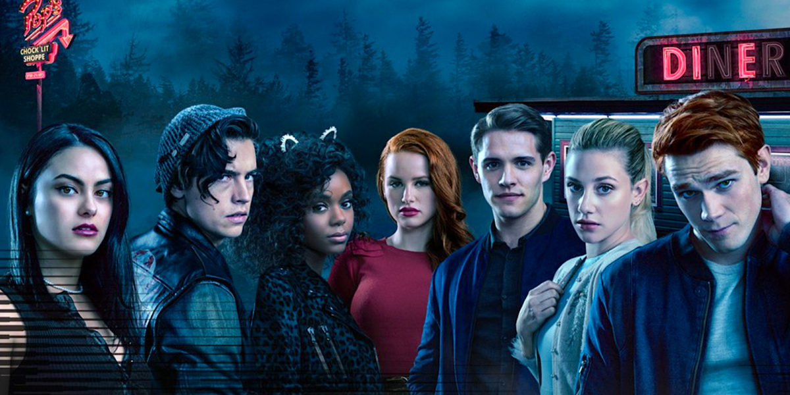

Intro to Wearables: A Spring 2020 Blog
Leonard Santos
Senses: Week 3 - 4
Assignment
Due: February 25, 2020 -
Creating a new sense through wearables.
Brainstorming
For this project, I wanted to challenge myself to make a new sense by combining two senses that are often ignored in our visual-centered technology: sound and movement. Specifically, I was inspired by the teen drama classic of the contemporary age. Of course, I'm talking about Riverdale.
Riverdale, for those of you who don't know, is an American teen drama series on the CW that's been showcasing a special blend of absurdity, teen drama, and murder since 2017. While I won't make any claims about the quality or realism of this program, I will say that it has one of the funniest implementation of sound effects in television. In one of the musical episodes of the show based on the musical "Heathers" (which is based on the movie "Heathers"), Riverdale's editors added this remarkably loud "swoosh" noise whenever a character moved.
For an example, feel free to watch the video below:
For this project, I want to create a skirt that makes a noise that emits whenever the user makes an appropriate amount of movement so that we can all channel our in Cheryl Blossom.